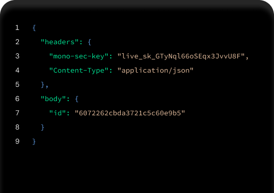

Reliably access
bank accounts
Mono helps businesses to access high-quality
financial data and direct bank payments.
Get started for free Contact Sales
Trusted by


Build for the future
of digital finance.
Bring tomorrow's solutions to life, with our
customer-focused solutions, today.

Connect
Securely access financial accounts for statements,
transactions, and identity
DirectPay
Collect bank payments in your web or mobile app.
No cards. No chargebacks
In Partnership With

Percept
Money operations and reconciliation for all your
corporate accounts, in one dashboard.
Businesses building
with Mono
Here are some of the interesting features
and experiences powered by Mono.
Getting stared

Why market leaders are choosing Mono
Here's what some of them are saying.
"
It's important to go with
a data provider that
inspires confidence in
users to give consent to
share their data; this is
one of our favourite
things about Mono.
Barima Effah-Adjei
Co-founder, Float
"
The onboarding and
integration process with
Mono was smooth. Our
Engineering and
Product teams use the
dashboard to oversee
our statement collection
process.
Barima Effah-Adjei
Co-founder, Float